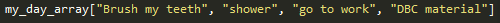
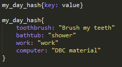

Arrays vs. Hashes
A description of each and how they differ
December 6, 2015
This week we began to actually use the coding language Ruby and with that came the struggles of implementing arrays and hashes and iterating over them. What is an array or a hash you ask? Luckily, I am here to provide you with an answer to that question and explain to you how they differ in the Ruby world!
An array is essentially an indexed list. This list can hold any number of Ruby objects such as numbers, and words/sentences or integers, strings, and floats in coding terms. For instance, if I made a list of things I have to do tomorrow I would write out: Brush my teeth, shower, go to work, and work on Dev Bootcamp material. An array would hold those things or tasks and assign them to a fixed position on the list.

Above you can see what an array looks like and the elements that I described within it. The first element in an array is at position 0, the second is in position 1, and so forth. When calling the element you do so by it's position. If I wanted to print "DBC material", I would do so by typing my_day_array[3] which is the positional value for that element.
Now that I've talked a bit about arrays. I will introduce you to hashes. Hashes are like arrays in that they are indexed lists. However, unlike arrays hashes are not assigned to a position in the list such as 0, 1, 2, etc. Instead the user or writer assigns the value a key or reference for the value.

The image above shows the input that a hash takes where the key or the reference term will be on the left followed by a colon and the element is on the right. Each of the elements are stored under the corresponding term that I chose for them. So if I want to print "DBC material" from my hash, I would do so by typing my_day_hash[:computer] which is the key that I have the value saved under.
At this point you may be wondering why someone would us an array over a hash or vice versa. The instances that you want to use an array in are ones that require order. For instance, if I started tracking my weight each week and adding it to an array I could easily reference a particular data point because it would be structured and linked to a positional value. Hashes are better for unordered information and can be thought of more like tables. If I wanted to track the favorite food of my family members I could input them with each person's name and their favorite food. Then if I wanted to reference my mom's favorite food I would access it by calling the hash and her name.
There are many other differences and advantages to arrays and hashes, but for the most part they are fairly similar. Hopefully I was able to introduce you to the topic and encourage you to research it some more on your own.
Thanks for visiting, and happy coding!